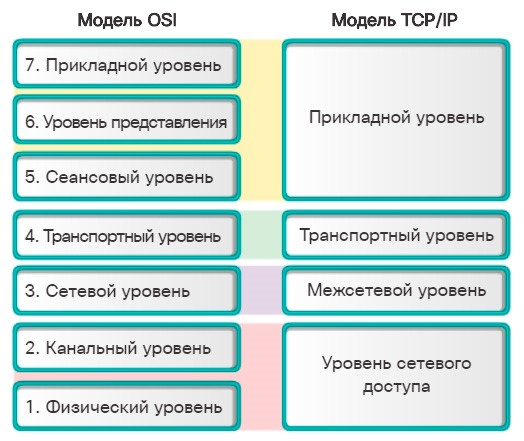

Сравнение моделей OSI и TCP/IP.
Набор протоколов TCP/IP может быть описан с точки зрения эталонной модели OSI. В модели OSI уровень доступа к сети и уровень приложений модели TCP/IP дополнительно подразделяются для описания отдельных функций, которые реализуются на этих уровнях.
На уровне доступа к сети набор протоколов TCP/IP не определяет список протоколов, используемых при работе со средой передачи данных; он описывает только передачу информации с сетевого уровня физическим сетевым протоколам.
Уровни 1 и 2 модели OSI описывают процедуры доступа к среде передачи и физическим способам отправки данных по сети.
Уровень 3 модели OSI, или сетевой уровень, соответствует сетевому уровню модели TCP/IP. Этот уровень описывает протоколы, определяющие пути передачи данных в сети.
Уровень 4 модели OSI, или транспортный уровень, соответствует транспортному уровню модели TCP/IP. Этот уровень описывает общие сервисы и функции, которые обеспечивают упорядоченную и надежную доставку данных от источника до места назначения.
Уровень приложений TCP/IP включает в себя ряд протоколов, которые поддерживают определенные функции для работы разнообразных приложений конечных пользователей.
Уровни 5, 6 и 7 модели OSI используются в качестве образцов разработчиками и поставщиками прикладного программного обеспечения для производства продуктов, предназначенных для работы в сети.
Обе модели (TCP/IP и OSI) широко применяются в отношении протоколов различных уровней. Так как модель OSI разделяет канальный и физический уровни, именно она используется для этих уровней.

По материалам Академии CISCO